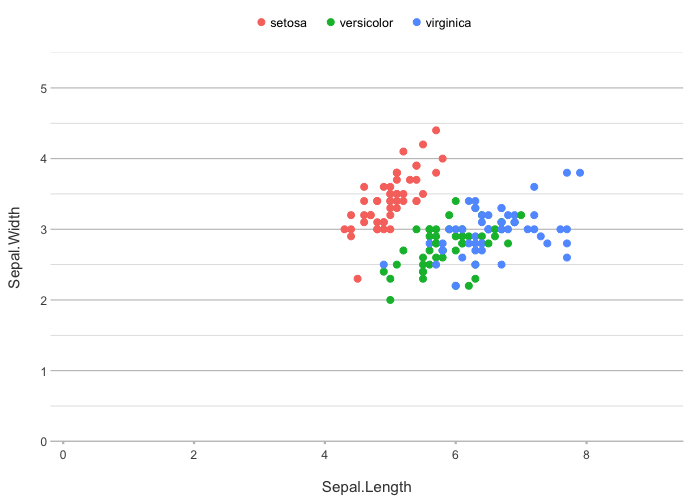
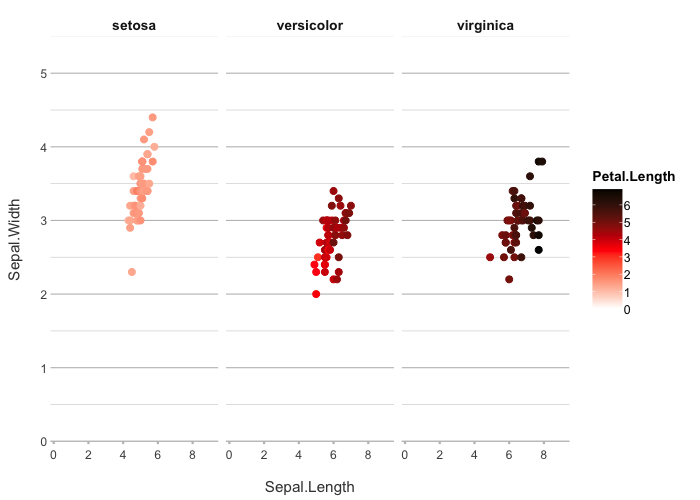
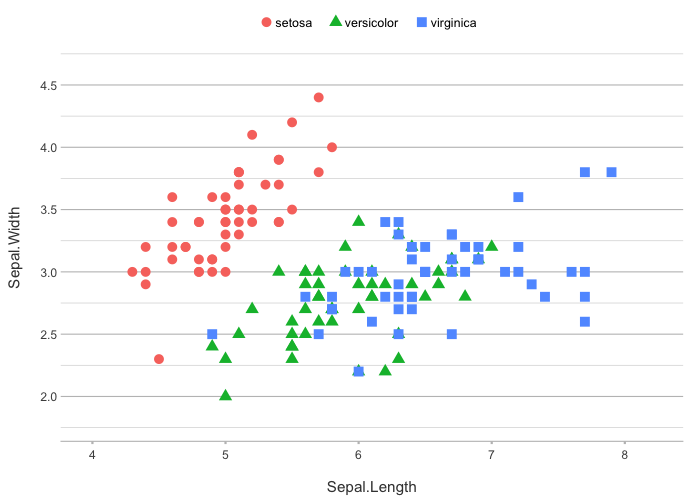
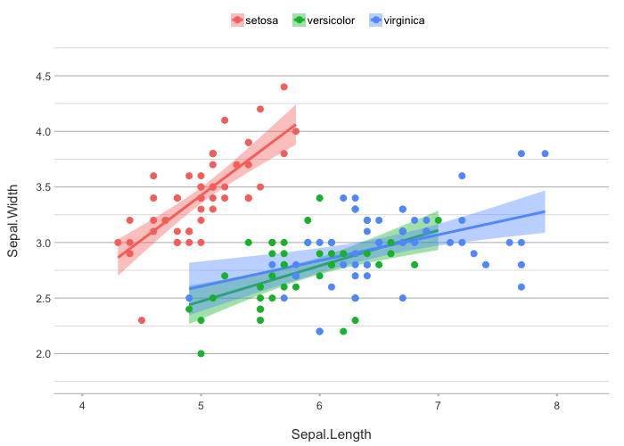
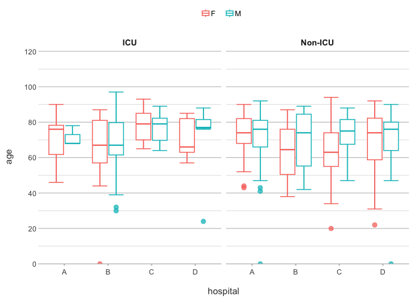
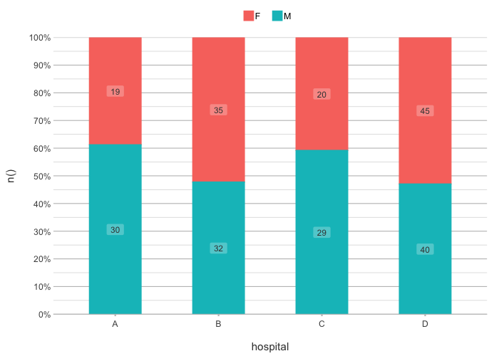
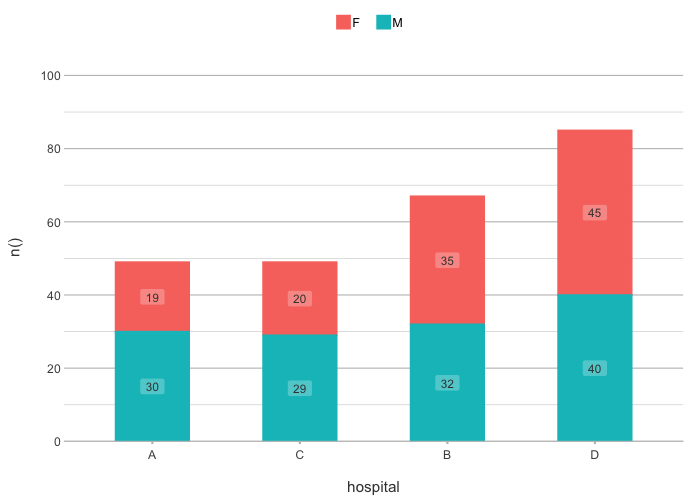
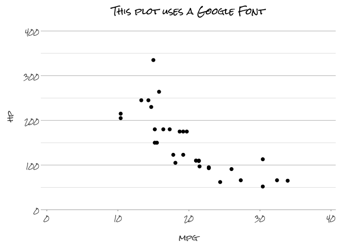

plot2 is a simple yet powerful extension of ggplot2, designed to streamline the process of creating high-quality data visualisations in R by taking away most of the work. Built with the philosophy of Less Typing, More Plotting, plot2 automates many of the routine tasks that typically require a lot of typing when plotting with ggplot2. It even renders pre-processing steps in, e.g., dplyr, tidyr and forcats largely superfluous. This package allows you to focus on the insights and stories your data can tell, rather than on the intricate details of plot construction.
Where ggplot2 usage involves writing many different functions (such as ggplot(), aes(), geom_col(), facet_wrap(), theme(), scale_y_continuous(), etc.), plot2 usage only involves filling in required arguments of a single function.
For a comprehensive guide to using
plot2, including advanced features and customisation options, please see the full vignette here.
Key Features
-
Plotting With As Few Lines As Possible: no need to type
ggplot(),aes(),geom_col(),facet_wrap(),theme(), orscale_y_continuous()anymore, just oneplot2()call will suffice. -
Automatic Plot Selection:
plot2automatically chooses the best plot type based on your data, saving you time and effort. -
In-line Data Transformations: Eliminate the need for manual pre-processing steps e.g. in
dplyrandtidyr, by performing data transformations directly within the plotting function, even for axis and plot titles. - Enhanced Sorting and Faceting: Easily sort and facet your data with simple arguments, streamlining the creation of complex multi-panel plots.
-
New Clean Theme: Includes
theme_minimal2(), a new minimalist theme based ontheme_minimal()that is further optimised for clear and professional outputs, therefore perfect for PDF publications, scientific manuscripts, and presentations. -
Seamless Integration with ggplot2: Retain all the power and flexibility of
ggplot2while benefiting fromplot2’s streamlined interface.
Philosophy
ggplot2 is a versatile tool that has become a cornerstone of data visualisation in R, giving users unparalleled control over their plots. However, with this flexibility often comes the need for repetitive and verbose code, especially for routine tasks such as setting axis labels, choosing plot types, or transforming data.
plot2 is designed to complement ggplot2 by offering a more streamlined and intuitive interface. It simplifies the process of creating plots by automatically handling many of the details, without sacrificing the flexibility and power that ggplot2 provides. Whether you’re quickly exploring data or preparing a polished visualisation for publication, plot2 helps you get there faster with less code.
Installation
You can install the latest version of plot2 here:
# Directly from R Universe
install.packages("plot2",
repos = c("https://cran.r-project.org", "https://msberends.r-universe.dev"))
# from GitHub using the 'remotes' package
remotes::install_github("msberends/plot2")Examples
Here’s how easy it is to get started with plot2:
library(plot2)
head(iris)
#> Sepal.Length Sepal.Width Petal.Length Petal.Width Species
#> 1 5.1 3.5 1.4 0.2 setosa
#> 2 4.9 3.0 1.4 0.2 setosa
#> 3 4.7 3.2 1.3 0.2 setosa
#> 4 4.6 3.1 1.5 0.2 setosa
#> 5 5.0 3.6 1.4 0.2 setosa
#> 6 5.4 3.9 1.7 0.4 setosa
# no variables determined, so plot2() will try for itself -
# the type will be points since the first two variables are numeric
iris |>
plot2()
#> ℹ Using category = Species
#> ℹ Using type = "point" since both axes are numeric
#> ℹ Using x = Sepal.Length
#> ℹ Using y = Sepal.Width
# if x and y are set, no additional mapping will be set:
iris |>
plot2(Sepal.Width, Sepal.Length)
#> ℹ Using type = "point" since both axes are numeric
iris |>
plot2(Species, Sepal.Length)
#> ℹ Using type = "boxplot" since all groups in Species contain at least three values
# the arguments are in this order: x, y, category, facet
iris |>
plot2(Sepal.Length, Sepal.Width, Petal.Length, Species)
#> ℹ Assuming facet.fixed_x = TRUE since the three x scales differ by less than 25%
#> ℹ Assuming facet.fixed_y = TRUE since the three y scales differ by less than 25%
#> ℹ Assuming facet.repeat_lbls_y = FALSE since y has fixed scales
#> ℹ Using type = "point" since both axes are numeric
#> NOTE: Use options(plot2.silent = TRUE) to silence plot2 messages.
iris |>
plot2(Sepal.Length, Sepal.Width, Petal.Length, Species,
colour = "viridis") # set the viridis colours
#> ℹ Assuming facet.fixed_x = TRUE since the three x scales differ by less than 25%
#> ℹ Assuming facet.fixed_y = TRUE since the three y scales differ by less than 25%
#> ℹ Assuming facet.repeat_lbls_y = FALSE since y has fixed scales
#> ℹ Using type = "point" since both axes are numeric
# set your own colours
iris |>
plot2(Sepal.Length, Sepal.Width, Petal.Length, Species,
colour = c("white", "red", "black"))
#> ℹ Assuming facet.fixed_x = TRUE since the three x scales differ by less than 25%
#> ℹ Assuming facet.fixed_y = TRUE since the three y scales differ by less than 25%
#> ℹ Assuming facet.repeat_lbls_y = FALSE since y has fixed scales
#> ℹ Using category.midpoint = 3.45 (the current category scale centre)
#> ℹ Using type = "point" since both axes are numeric
# y can also be multiple (named) columns
iris |>
plot2(x = Sepal.Length,
y = c(Length = Petal.Length, Width = Petal.Width),
category.title = "Petal property")
#> ℹ Using type = "point" since both axes are numeric
iris |>
# with included selection helpers such as where(), starts_with(), etc.:
plot2(x = Species, y = where(is.double))
#> ℹ Using type = "boxplot" since all groups in Species and category contain at least three values
#> ℹ Using y = c(Petal.Length, Petal.Width, Sepal.Length, Sepal.Width)
# the category type can be one or more aesthetics
iris |>
plot2(zoom = TRUE,
category_type = c("colour", "shape"),
size = 3)
#> ℹ Using category = Species
#> ℹ Using type = "point" since both axes are numeric
#> ℹ Using x = Sepal.Length
#> ℹ Using y = Sepal.Width
iris |>
plot2(zoom = TRUE,
category = Petal.Length,
category_type = c("colour", "size"),
colour = "viridis")
#> ℹ Using type = "point" since both axes are numeric
#> ℹ Using x = Sepal.Length
#> ℹ Using y = Sepal.Width
# easily add a smooth
iris |>
plot2(zoom = TRUE,
smooth = TRUE)
#> ℹ Using category = Species
#> ℹ Using type = "point" since both axes are numeric
#> ℹ Using x = Sepal.Length
#> ℹ Using y = Sepal.Width
#> `geom_smooth()` using method = 'loess' and formula = 'y ~ x'
iris |>
plot2(zoom = TRUE,
smooth = TRUE,
smooth.method = "lm")
#> ℹ Using category = Species
#> ℹ Using type = "point" since both axes are numeric
#> ℹ Using x = Sepal.Length
#> ℹ Using y = Sepal.Width
#> `geom_smooth()` using formula = 'y ~ x'
# support for secondary y axis
mtcars |>
plot2(x = mpg,
y = hp,
y_secondary = disp ^ 2,
y_secondary.scientific = TRUE,
title = "Secondary y axis sets colour to the axis titles")
#> ℹ Using type = "point" since both axes are numeric
admitted_patients
#> # A tibble: 250 × 7
#> date patient_id gender age age_group hospital ward
#> <date> <dbl> <chr> <dbl> <ord> <fct> <chr>
#> 1 2002-01-14 1 M 78 75+ D Non-ICU
#> 2 2002-03-17 2 M 78 75+ C Non-ICU
#> 3 2002-04-08 3 M 78 75+ A ICU
#> 4 2002-04-14 4 M 72 55-74 C Non-ICU
#> 5 2002-05-07 5 M 83 75+ C Non-ICU
#> 6 2002-05-16 6 F 65 55-74 B ICU
#> 7 2002-05-16 7 M 47 25-54 D Non-ICU
#> 8 2002-06-18 8 M 30 25-54 B ICU
#> 9 2002-06-23 9 M 82 75+ D Non-ICU
#> 10 2002-06-23 9 M 82 75+ D Non-ICU
#> # ℹ 240 more rows
# the arguments are in this order: x, y, category, facet
admitted_patients |>
plot2(hospital, age)
#> ℹ Using type = "boxplot" since all groups in hospital contain at least three values
admitted_patients |>
plot2(hospital, age, gender)
#> ℹ Using type = "boxplot" since all groups in hospital and gender contain at least three values
admitted_patients |>
plot2(hospital, age, gender, ward)
#> ℹ Assuming facet.fixed_y = TRUE since the two y scales differ by less than 25%
#> ℹ Assuming facet.repeat_lbls_y = FALSE since y has fixed scales
#> ℹ Using type = "boxplot" since all groups in hospital and gender and ward contain at least three values
# or use any function for y
admitted_patients |>
plot2(hospital, median(age), gender, ward)
#> ℹ Assuming facet.fixed_y = TRUE since the two y scales differ by less than 25%
#> ℹ Assuming facet.repeat_lbls_y = FALSE since y has fixed scales
admitted_patients |>
plot2(x = hospital,
y = age,
category = gender,
colour = c("F" = "#3F681C", "M" = "#375E97"),
colour_fill = "#FFBB00",
linewidth = 1.25,
y.age = TRUE)
#> ℹ Using type = "boxplot" since all groups in hospital and gender contain at least three values
admitted_patients |>
plot2(age, type = "hist")
#> ℹ Assuming smooth = TRUE for type = "histogram"
#> ℹ Using binwidth = 6.4 based on data
#> NOTE: Use options(plot2.silent = TRUE) to silence plot2 messages.
# even titles support calculations, including support for {glue}
admitted_patients |>
plot2(age, type = "hist",
title = paste("Based on n =", n_distinct(patient_id), "patients"),
subtitle = paste("Total rows:", n()),
caption = glue::glue("From {n_distinct(hospital)} hospitals"),
x.title = paste("Age ranging from", paste(range(age), collapse = " to ")))
#> ℹ Assuming smooth = TRUE for type = "histogram"
#> ℹ Using binwidth = 6.4 based on data
# the default type is column, datalabels are automatically
# set in non-continuous types:
admitted_patients |>
plot2(hospital, n(), gender)
# two categories might benefit from a dumbbell plot:
admitted_patients |>
plot2(hospital, median(age), gender, type = "dumbbell")
# sort on any direction:
admitted_patients |>
plot2(hospital, n(), gender,
x.sort = "freq-asc",
stacked = TRUE)
#> ℹ Applying x.sort = "freq-asc" using summarise_function = sum
admitted_patients |>
plot2(hospital, n(), gender,
x.sort = c("B", "D", "A"), # missing values ("C") will be added
category.sort = "alpha-desc",
stacked = TRUE)
# support for Sankey plots
Titanic |> # a table from base R
plot2(x = c(Age, Class, Survived),
category = Sex,
type = "sankey")
#> ℹ Assuming sankey.remove_axes = TRUE
#> ! Input class 'table' was transformed using `as.data.frame()`
# matrix support, such as for cor()
correlation_matrix <- cor(mtcars)
class(correlation_matrix)
#> [1] "matrix" "array"
head(correlation_matrix)
#> mpg cyl disp hp drat wt qsec vs am gear carb
#> mpg 1.0000000 -0.8521620 -0.8475514 -0.7761684 0.6811719 -0.8676594 0.41868403 0.6640389 0.5998324 0.4802848 -0.5509251
#> cyl -0.8521620 1.0000000 0.9020329 0.8324475 -0.6999381 0.7824958 -0.59124207 -0.8108118 -0.5226070 -0.4926866 0.5269883
#> disp -0.8475514 0.9020329 1.0000000 0.7909486 -0.7102139 0.8879799 -0.43369788 -0.7104159 -0.5912270 -0.5555692 0.3949769
#> hp -0.7761684 0.8324475 0.7909486 1.0000000 -0.4487591 0.6587479 -0.70822339 -0.7230967 -0.2432043 -0.1257043 0.7498125
#> drat 0.6811719 -0.6999381 -0.7102139 -0.4487591 1.0000000 -0.7124406 0.09120476 0.4402785 0.7127111 0.6996101 -0.0907898
#> wt -0.8676594 0.7824958 0.8879799 0.6587479 -0.7124406 1.0000000 -0.17471588 -0.5549157 -0.6924953 -0.5832870 0.4276059
mtcars |>
cor() |>
plot2()
#> ℹ Assuming type = "tile" since the matrix contains identical row and column names
#> ! Omitting printing of 121 datalabels - use datalabels = TRUE to force printing
#> NOTE: Use options(plot2.silent = TRUE) to silence plot2 messages.
mtcars |>
cor() |>
plot2(colour = c("blue3", "white", "red3"),
datalabels = TRUE,
category.title = "*r*-value",
title = "Correlation matrix")
#> ℹ Assuming type = "tile" since the matrix contains identical row and column names
#> ℹ Using category.midpoint = 0 (the current category scale centre)
# plot2() supports all S3 extensions available through
# ggplot2::fortify() and broom::augment(), such as regression models:
lm(mpg ~ hp, data = mtcars) |>
plot2(x = mpg ^ -3,
y = hp ^ 2,
smooth = TRUE,
smooth.method = "lm",
smooth.formula = "y ~ log(x)",
title = "Titles/captions *support* **markdown**",
subtitle = "Axis titles contain the square notation: x^2")
#> ℹ Using type = "point" since both axes are numeric
# sf objects (geographic plots, 'simple features') are also supported
netherlands |>
plot2()
#> ℹ Assuming datalabels.centroid = TRUE. Set to FALSE for a point-on-surface placing of datalabels.
#> ℹ Using category = area_km2
#> ℹ Using datalabels = province
netherlands |>
plot2(colour_fill = "viridis", colour_opacity = 0.75) |>
add_sf(netherlands, colour = "black", colour_fill = NA)
#> ℹ Assuming datalabels.centroid = TRUE. Set to FALSE for a point-on-surface placing of datalabels.
#> ℹ Using category = area_km2
#> ℹ Using datalabels = province
# support for any system or Google font
mtcars |>
plot2(mpg, hp,
font = "Rock Salt",
title = "This plot uses a Google Font")
#> ℹ Using type = "point" since both axes are numeric
Like plot(), just pass x, y in the way you prefer:
Shiny app
You can your plots interactively as well with the built-in Shiny app. All plot2 arguments are available in it. In RStudio, there is an addin menu item too.
iris |>
create_interactively()
Getting Involved
We welcome contributions to plot2, whether it’s through reporting issues, suggesting features, or submitting pull requests. If you’re familiar with ggplot2 and the tidyverse, your insights will be especially valuable as we continue to develop and refine the package.
Previous Iteration
Though only released here in August 2024, this package has had years of development with hundreds of Git commits in an earlier iteration here.
License
This project is licensed under the GNU GPL v2.0 License - see the LICENSE file for details.